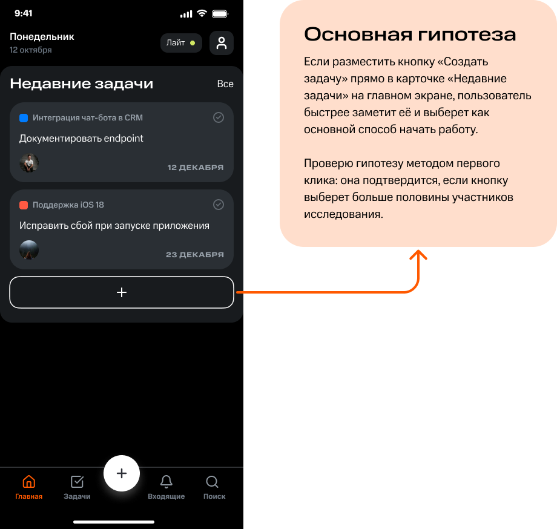
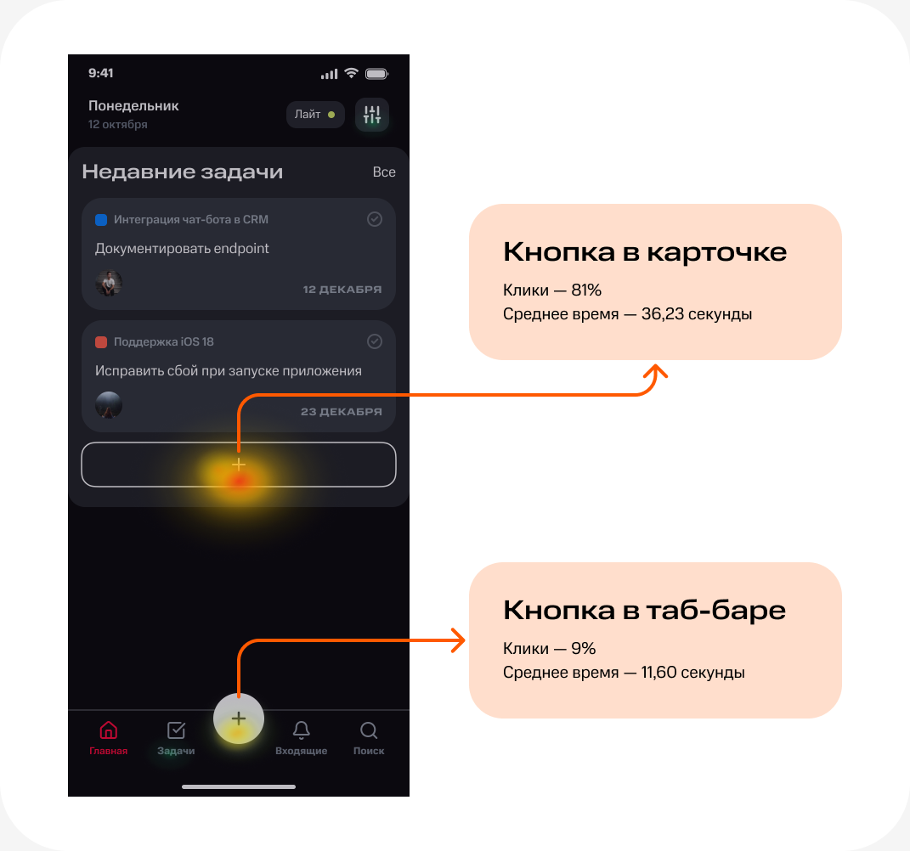

Задача
Превратить создание задачи из отдельного процесса в одно понятное действие
После интервью, прототипирования и тестирования я сократил путь до результата: теперь задачу можно добавить за 2–3 шага, без поиска нужной функции и лишних переходов.
ПОЛЬЗОВАТЕЛИ И ИНТЕРВЬЮ
У приложения оказалось два разных сценария использования
Чтобы понять привычки пользователей, я провёл качественные интервью — по одному часу с представителями каждой группы.
Пользователи по необходимости
Обращаются к таск-трекеру только тогда, когда появляется конкретная задача или рабочий вопрос.
Пользователи в постоянном процессе
Каждый день работают с командами, проектами и общим потоком задач.
Вывод
За одним продуктом скрываются две разные модели поведения. Одним пользователям нужно быстро зафиксировать задачу и вернуться к работе. Другим важно постоянно видеть загрузку команды, состояние проектов и текущие WIP-лимиты, чтобы не перегружать исполнителей.
ПЕРСОНЫ
Арт-директор на автопилоте
Руководит небольшой командой, совмещает работу с семейными делами и выбирает максимально понятные инструменты. Не станет осваивать сложную систему, если компания не требует этого напрямую.
Что ценит: быстрый старт; минимум настроек; понятный интерфейс; ощутимую пользу для клиента.
Что мешает: недоверие к новым продуктам; отсутствие привычки вести задачи; перегруженные интерфейсы.
Канбан-евангелист
Управляет командой разработки, формирует рабочие процессы и использует таск-трекер как инструмент управления продуктом. Настраивает пространство под команду и следит за соблюдением стандартов.
Что ценит: гибкие настройки; прозрачные правила работы; проверенные подходы; контроль эффективности команды.
Что мешает: зависимость от API; необходимость обучения; сложный первоначальный запуск.
Анализ конкурентов
Рабочий процесс уже не привязан к столу, но мобильные версии всё ещё отстают
В большинстве сервисов расширенные возможности доступны только в веб-версии. При этом сильные решения предлагают несколько способов работы с задачами: доску, список и календарь. Среди других конкурентов — Weeek, Yougile и Kaiten.
Как устроено создание задачи в Asana
На экране доски пользователь видит: принадлежность задачи к проекту; название задачи; ответственного; кнопку добавления; переключатель между режимами просмотра. Создать задачу можно прямо из текущего экрана. Для этого предусмотрены три точки входа: над колонками, под карточками и в плавающем меню.

Название задачи
Юзерпик
Кнопка Добавить
Переключение режима просмотра
User flow
Отдельный экран не помогал пользователю — он только задерживал действие
В исходном сценарии между главным экраном и созданием задачи находился дополнительный шаг. Я проверил его необходимость и убрал промежуточное окно. Сценарий: Главный экран → Создать задачу → Заполнить поля Для неавторизованного пользователя: Создать задачу → Войти или зарегистрироваться

Вывод
Раньше пользователь сначала попадал в отдельное окно, где указывал название задачи и назначал исполнителя. Только после этого он мог перейти к остальным полям. Теперь кнопка «Создать задачу» сразу открывает рабочую форму. Пользователь быстрее переходит к сути, а сам сценарий становится короче и понятнее.
Сценарий
Одна кнопка может определить весь сценарий работы
Если пользователь сразу понимает, как добавить задачу, он быстрее начинает работать с сервисом, возвращается к нему и с большей вероятностью доходит до платного тарифа.


Основная гипотеза
Если разместить кнопку «Создать задачу» прямо в карточке «Недавние задачи» на главном экране, пользователь быстрее заметит её и выберет как основной способ начать работу. Проверю гипотезу методом первого клика: она подтвердится, если кнопку выберет больше половины участников исследования.
Метрики
Доля пользователей, которые создают и завершают задачи Показывает, помогает ли интерфейс довести начатое действие до результата.
Частота взаимодействия с досками Помогает понять, используют ли пользователи доски в работе или просто оставляют их открытыми.
Количество пользователей, оформивших платную подписку Главный показатель влияния сценария на монетизацию продукта.
Экраны сценария
Кнопка “Создать” в таб-баре увеличивает создание задач и время в приложении


Создать задачу
Ввести название
Название введено
Выбрать исполнителя
Заменил выбор радиокнопок кликом по имени
Исполнитель выбран
Только один профиль может быть ответственным за задачу
Выбор даты старта и окончания
Выбор времени
Параметры выбраны
Выбор проекта
Проект выбран
Выбрать теги
Теги выбраны
Добавить описание
Описание добавлено
Добавить файл
Создать новую подзадачу
Вывод
Чем короче путь, тем увереннее пользователь Работать с «Нитью» стало проще: пользователь делает меньше действий, реже сталкивается с лишними переходами и лучше понимает, что произойдёт дальше. Ожидаемый результат: более частые возвращения в таск-трекер, быстрое завершение задач и большая вероятность перехода на платный тариф.
Тестирование
Я проверил, какая точка входа быстрее приводит к созданию задачи
Для исследования выбрал количественный метод первого клика. Он позволяет сравнить несколько вариантов интерфейса и увидеть, какой элемент пользователи выбирают первым. Сначала я сформулировал продуктовую задачу и план исследования: определил целевую аудиторию, размер выборки и задания для участников.
Варианты точки входа
Точка входа 1 Кнопка внутри карточки «Недавние задачи» Точка входа 2 Кнопка «Добавить» в таб-баре
Исследовательский вопрос
Какой элемент на главном экране эффективнее подсказывает пользователю, где создать новую задачу?

Результаты теста
Карточка «Недавние задачи» стала очевидным первым шагом


Кнопка в карточке
Клики — 81% Среднее время — 36,23 секунды
Кнопка в таб-баре
Клики — 9% Среднее время — 11,60 секунды
Большинство участников выбрали кнопку внутри карточки. В зависимости от варианта теста от 71% до 100% пользователей воспринимали её как основную точку входа в создание задачи.
Решение
Кнопку «Создать задачу» разместил в карточке «Недавние задачи»
Именно этот элемент пользователи чаще выбирали как первый шаг к созданию задачи.
Кнопку «Добавить» в таб-баре оставил
Она сохраняет быстрый доступ к созданию задачи или доски с любого экрана первого уровня.